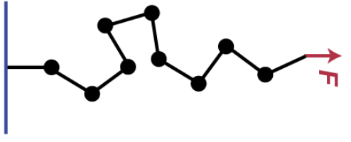

Two standard examples for a system coupled to an external field#
In many physical systems, an extensive generalized coordinate couples linearly to an external field, leading to a generalized ensemble. These systems exhibit behavior analogous to ensembles with conserved quantities, as fluctuations in the generalized coordinate follow similar statistical principles.
Here, we go in detail through two examples: An ising spin in a magnetic field and a freely jointed polymer chain under an external force.
Section 1: Ising Paramagnet#
1.1 Derivation of the Partition Function#
The Ising paramagnet consists of \(N\) non-interacting spins in an external magnetic field \(B_{ext}\). Each spin can take two values, \(+1\) or \(-1\), corresponding to alignment or anti-alignment with the field.
The energy of a single spin is given by:
where \(\sigma_i = \pm 1\) is the spin in the direction of the external field and \(\mu\) is the magnetic moment of each spin.
The partition function for a single spin is:
Simplifying, we obtain:
For \(N\) independent spins, the total partition function is:
1.2 Expectation Value of Magnetization#
The magnetization is given by:
1.3 Magnetic Susceptibility#
The magnetic susceptibility is:
# Python code to compute and visualize the results for the Ising Paramagnet
import numpy as np
import matplotlib.pyplot as plt
# Function definitions
def magnetization(N, beta, mu, H):
return N * mu * np.tanh(beta * mu * H)
def susceptibility(N, beta, mu, H):
return N * mu**2 * beta / (1 + beta * mu**2 * np.cosh(beta * mu * H)**(-2))
# Parameters
N = 1000 # Number of spins
mu = 1 # Magnetic moment
T = np.linspace(0.1, 5, 500) # Temperature range (in units of k_B)
H = 1 # External magnetic field
beta = 1 / T # Inverse temperature
# Calculations
magnetizations = magnetization(N, beta, mu, H)
susceptibilities = susceptibility(N, beta, mu, H)
# Plot magnetization
plt.figure(figsize=(10, 6))
plt.plot(T, magnetizations, label='Magnetization')
plt.xlabel('Temperature (T)')
plt.ylabel('Magnetization <M>')
plt.title('Magnetization vs Temperature for Ising Paramagnet')
plt.legend()
plt.grid(True)
plt.show()
# Plot susceptibility
plt.figure(figsize=(10, 6))
plt.plot(T, susceptibilities, label='Magnetic Susceptibility')
plt.xlabel('Temperature (T)')
plt.ylabel('Susceptibility (Chi)')
plt.title('Magnetic Susceptibility vs Temperature for Ising Paramagnet')
plt.legend()
plt.grid(True)
plt.show()
Section 2: Freely Jointed Chain in an External Force Field#
Section 2: Freely Jointed Chain in an External Force Field#
2.1 Derivation of the Partition Function#
Consider a freely jointed chain with \(N\) segments, each of length \(l\), in an external force field \(F\).

The energy of the system is:
where \(\theta_i\) is the angle between segment \(i\) and the direction of the force.
The partition function for a single segment is:
Approximating for large \(\beta F l\), we have:
For \(N\) independent segments, the total partition function is:
2.2 Expectation Value of End-to-End Distance#
The end-to-end distance is:
where \(L(x) = \coth(x) - \frac{1}{x}\) is the Langevin function.
2.4 Linear Response to an Increase in Force#
In the linear response regime (small \(F\)), the end-to-end distance is approximately proportional to the applied force:
The proportionality constant, \(\chi_R\), represents the response coefficient:
# Python code to compute and visualize the results for the Freely Jointed Chain
# Function definitions
import numpy as np
def langevin(x):
return (np.exp(x) + np.exp(-x)) / (np.exp(x) - np.exp(-x)) - 1 / x
def end_to_end_distance(N, beta, l, F):
return N * l * langevin(beta * F * l)
# Parameters
N = 100 # Number of segments
l = 1 # Length of each segment
F = np.linspace(0.1, 5, 500) # Force range
T = 1 # Fixed temperature
beta = 1 / T # Inverse temperature
# Calculations
end_to_end_distances = end_to_end_distance(N, beta, l, F)
# Plot end-to-end distance
plt.figure(figsize=(10, 6))
plt.plot(F, end_to_end_distances, label='End-to-End Distance')
plt.xlabel('Force (F)')
plt.ylabel('End-to-End Distance <R>')
plt.title('End-to-End Distance vs Force for Freely Jointed Chain')
plt.legend()
plt.grid(True)
plt.show()